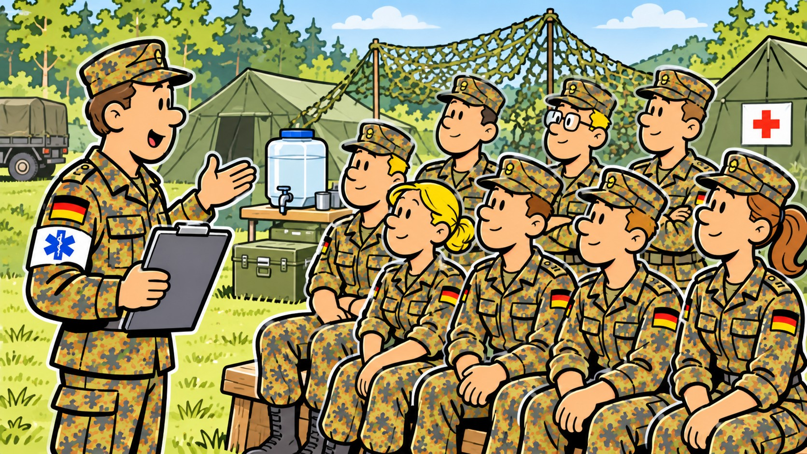

Medizinmilitärische Dialoge · 11 · B1
Hygienebelehrung vor einer Geländeübung

A. Hygieneregeln
Hören Sie die Belehrung. Was sollen die Soldaten tun und was sollen sie nicht tun?
Transkript – Lückentext
Hören Sie die Belehrung noch einmal und ergänzen Sie die fehlenden Wörter. Achten Sie auf die Groß- und Kleinschreibung.